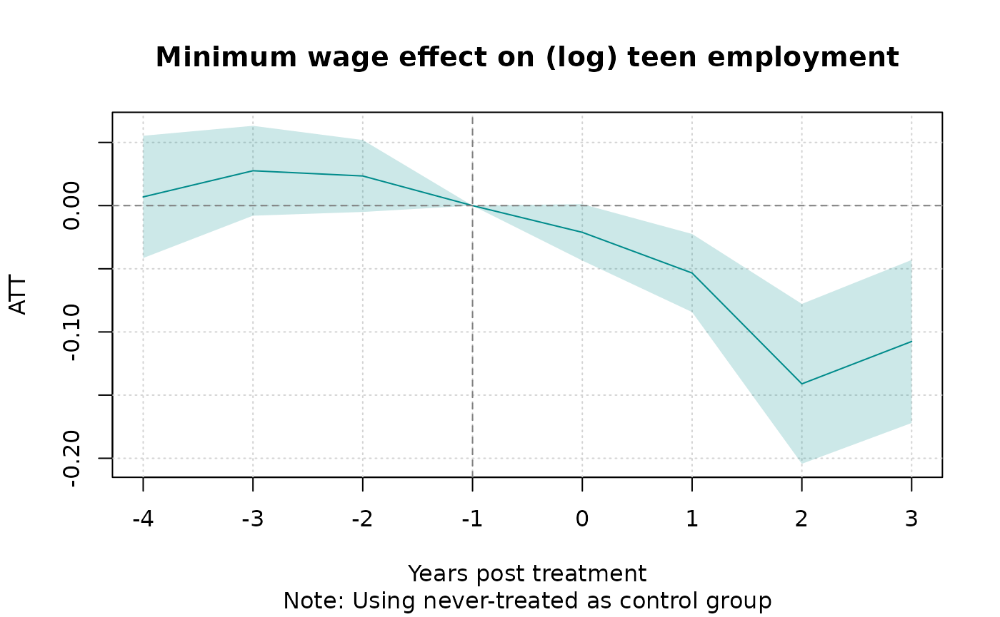
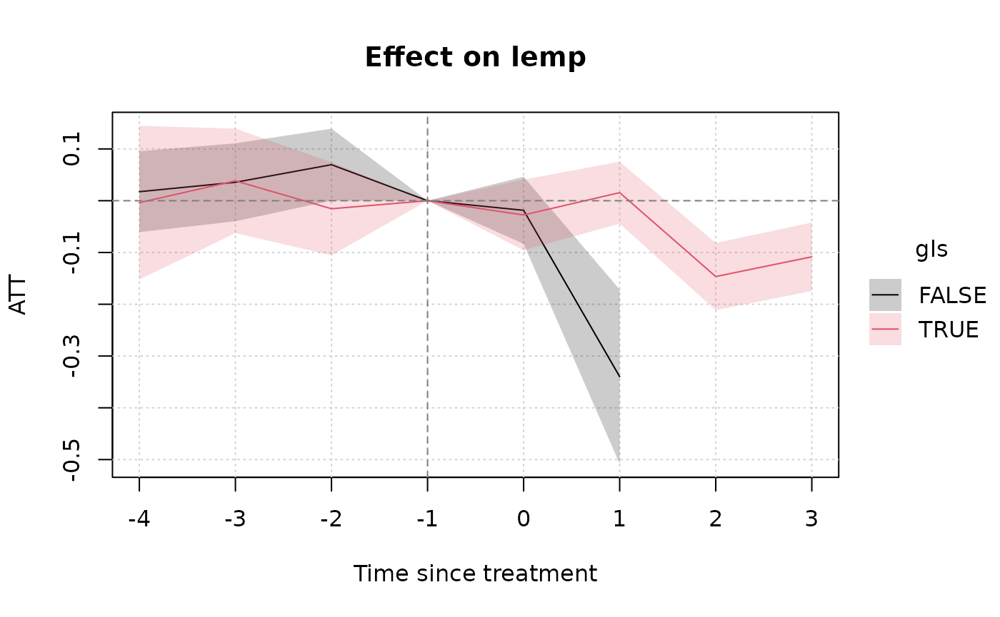

Background
A canonical research design for social scientists is the so-called “difference-in-differences” (DiD) design. The essential idea behind DiD is that we can estimate the causal impact of an intervention (“treatment”) by comparing the pre- and post-intervention outcomes of indivduals that received treatment (“treated” group) against the outcomes of comparable indivduals that didn’t receive treatment (“control” group).1
In the classic 2x2 DiD case (two units, two periods), a simple interaction effect between two dummy variables suffices to recover the treatment effect. In base R this might look something like:
lm(y ~ Dtreated_unit * Dpost_treatment, data = somedata)where the resulting coefficient on the
Dtreated_unitTRUE:Dpost_treatmentTRUE interaction term
represents the treatment effect.
Rather than manually specify the interaction term, in practice researchers often use an equivalent formulation known as two-way fixed effects (TWFE). The core idea of TWFE is that we can subsume the interaction term from the previous code chunk by adding unit and time fixed effects. A single treatment dummy can then be used to capture the effect of treatment directly. A TWFE regression in base R might look as follows:
where the treatment effect is now captured by the coefficient on the
Dtreat dummy.
The TWFE shortcut is especially nice for more complicated panel data settings with multiple units and multiple times periods. Speaking of which, if you prefer to use a dedicated fixed effects / panel data package like fixest, you could also estimate the previous regression like so:
These TWFE regressions are easy to run and intuitive, and for a long time everyone was happy. But it was too good to last. A cottage industry of clever research now demonstrates that things are not quite so simple. Among other things, the standard TWFE formulation can impose strange (negative) weighting conditions on key parts of the estimation procedure. One implication is that you risk a high probability of estimate bias in the presence of staggered treatment rollouts, which are very common in real-life applications.
Fortunately, just as econometricians were taking away one of our favourite tools, they were kind enough to replace it with some new ones. Among these, the proposed approach by Wooldridge (2021, 2023) is noteworthy. His idea might be paraphrased as stating that the problem with TWFE is not that we were doing it in the first place. Rather, it’s that we weren’t doing it enough. Instead of only including a single treatment × time interaction, Wooldridge recommends that we saturate our model with all possible interactions between treatment and time variables, including treatment cohorts, as well as other covariates. He goes on to show that this approach actually draws an equivalence between different types of estimators (pooled OLS, twoway Mundlak regression, etc.) So it’s not entirely clear what to call it. But Wooldridge refers to the general idea as as extended TWFE—or, ETWFE—which I rather like and is where this package takes its name.
The Wooldridge ETWFE solution is intuitive and elegant. But it is also rather tedious and error prone to code up manually. You have to correctly specify all the possible interactions, demean control variables within groups, and then recover the treatment effects of interest via an appropriate marginal effect aggregation. The etwfe package aims to simplify the process by providing convenience functions that do all this work for you.
Dataset
To demonstrate the core functionality of etwfe,
we’ll use the mpdta
dataset on US teen employment from the did package
(which you’ll need to install separately).
# install.packages("did")
data("mpdta", package = "did")
head(mpdta)
#> year countyreal lpop lemp first.treat treat
#> 866 2003 8001 5.896761 8.461469 2007 1
#> 841 2004 8001 5.896761 8.336870 2007 1
#> 842 2005 8001 5.896761 8.340217 2007 1
#> 819 2006 8001 5.896761 8.378161 2007 1
#> 827 2007 8001 5.896761 8.487352 2007 1
#> 937 2003 8019 2.232377 4.997212 2007 1“Treatment” in this dataset refers to an increase in the minimum wage
rate. In the examples that follow, our goal is to estimate the effect of
this minimum wage treatment (treat) on the log of teen
employment (lemp). Notice that the panel ID is at the
county level (countyreal), but treatment was staggered
across cohorts (first.treat) so that a group of counties
were treated at the same time. In addition to these staggered treatment
effects, we also observe log population (lpop) as a
potential control variable.
Basic usage
Let’s load etwfe and work through its basic functionality. As we shall see, the core workflow of the package involves two consecutive function calls:
etwfe
Given the package name, it won’t surprise you to learn that the key
estimating function is etwfe(). Here’s how it would look
for our example dataset.
library(etwfe)
mod = etwfe(
fml = lemp ~ lpop, # outcome ~ controls
tvar = year, # time variable
gvar = first.treat, # group variable
data = mpdta, # dataset
vcov = ~countyreal # vcov adjustment (here: clustered)
)There are a few things to say about our etwfe() argument
choices and other function options, but we’ll leave those details aside
until a bit later. Right now, just know that all of the above arguments
are required except vcov (though I generally recommend it
too, since we probably want to cluster our standard errors at the
individual unit level).
Let’s take a look at our model object.
mod
#> OLS estimation, Dep. Var.: lemp
#> Observations: 2,500
#> Fixed-effects: first.treat: 4, year: 5
#> Standard-errors: Clustered (countyreal)
#> Estimate Std. Error t value Pr(>|t|)
#> lpop 1.065461 0.021824 48.821102 < 2.2e-16 ***
#> first.treat::2004:lpop 0.050982 0.037756 1.350320 0.177525
#> first.treat::2006:lpop -0.041095 0.047390 -0.867183 0.386259
#> first.treat::2007:lpop 0.055518 0.039212 1.415838 0.157447
#> year::2004:lpop 0.011014 0.007554 1.458043 0.145458
#> year::2005:lpop 0.020733 0.008104 2.558268 0.010814 *
#> year::2006:lpop 0.010535 0.010816 0.974084 0.330487
#> year::2007:lpop 0.020921 0.011808 1.771708 0.077053 .
#> ... 14 coefficients remaining (display them with summary() or use argument n)
#> ... 10 variables were removed because of collinearity (.Dtreat:first.treat::2006:year::2004, .Dtreat:first.treat::2006:year::2005 and 8 others [full set in $collin.var])
#> ---
#> Signif. codes: 0 '***' 0.001 '**' 0.01 '*' 0.05 '.' 0.1 ' ' 1
#> RMSE: 0.537131 Adj. R2: 0.871722
#> Within R2: 0.869464What etwfe() has done underneath the hood is construct a
treatment dummy variable .Dtreat and saturated it together
with the other variables of interest as a set of multiway interaction
terms.2
You may have noticed that our etwfe() call returns a
standard fixest
object, since this is what it uses to perform the underlying estimation.
All of the associated methods and functions from the
fixest package are thus compatible with our model
object. For example, we could plot the raw regression coefficients with
fixest::coefplot(), or print them to a nice regression
table with fixest::etable(). However, the raw coefficients
from an etwfe() estimation are not particularly meaningful
in of themselves. Recall that these are complex, multiway interaction
terms that are probably hard to to interpret on their own. This insight
leads us to our next key function…
emfx
If the raw etwfe coefficients aren’t particularly useful
by themselves, what can we do with them instead? Well, we probably want
to aggregate them along some dimension of interest (e.g., by groups or
time, or as an event study). A natural way to perform these aggregations
is by recovering the appropriate marginal effects. The
etwfe package provides another convenience function for
doing so: emfx(), which is a thin(ish) wrapper around marginaleffects::slopes().
For example, we can recover the average treatment effect on the treated (ATT) as follows.
emfx(mod)
#>
#> .Dtreat Estimate Std. Error z Pr(>|z|) S 2.5 % 97.5 %
#> TRUE -0.0506 0.0125 -4.05 <0.001 14.3 -0.0751 -0.0261
#>
#> Term: .Dtreat
#> Type: response
#> Comparison: TRUE - FALSEIn other words, our model is telling us that an increase in the minimum wage leads to an approximate 5 percent decrease in teen employment.
Beyond simple ATTs, emfx() also supports other types of
aggregations via the type argument. For example, we can use
type = "calendar" to get ATTs by period, or
type = "group" to get ATTs by cohort groups. But the option
that will probably be useful to most people is
type = "event", which will recover dynamic treatment
effects a la an event study. Let’s try this out and then save
the resulting object, since I plan to reuse it in a moment.
mod_es = emfx(mod, type = "event")
mod_es
#>
#> event Estimate Std. Error z Pr(>|z|) S 2.5 % 97.5 %
#> 0 -0.0332 0.0134 -2.48 0.013 6.3 -0.0594 -0.00702
#> 1 -0.0573 0.0171 -3.34 <0.001 10.2 -0.0910 -0.02373
#> 2 -0.1379 0.0308 -4.48 <0.001 17.0 -0.1982 -0.07753
#> 3 -0.1095 0.0323 -3.39 <0.001 10.5 -0.1729 -0.04620
#>
#> Term: .Dtreat
#> Type: response
#> Comparison: TRUE - FALSEOur event study suggests that the teen disemployment effect of a minimum wage hike is fairly modest at first (3%), but increases over the next few years (>10%). In the next section, we’ll look at ways to communicate this kind of finding to your audience.
Presentation
Plots
As of etwfe v0.5.0, we provide a native
plot.emfx method for convenient visualization.
plot(mod_es)
Note that emfx only reports post-treatment effects here.
That’s because all pre-treatment effects have been swept out of the
estimation as a result of the ETWFE setup. Specifically, under the
default setting where the control group comprises the “not-yet” treated
units, all pre-treatment effects are mechanistically set to zero.3
Alternatively, you can specify the “never” treated units as the control
group by first calling etwfe(..., cgroup = "never"). This
does return pre-treatment effects, albeit with the potential
trade-off of yielding less precise estimates from not using all
available information.
mod_es2 = etwfe(
lemp ~ lpop, tvar = year, gvar = first.treat, data = mpdta, vcov = ~countyreal,
cgroup = "never" # <= use never treated as control group
) |>
emfx(type = "event")
plot(mod_es2)
Two final points about visualizing emfx objects. First,
you can customize your plots by overriding default arguments. We use tinyplot
as a backend and you should be able to pass through any valid argument
that tinyplot() understands. For example:
plot(
mod_es2,
type = "ribbon",
col = "darkcyan",
xlab = "Years post treatment",
main = "Minimum wage effect on (log) teen employment",
sub = "Note: Using never-treated as control group",
# file = "event-study.png", width = 8, height = 5. ## uncomment to save file
)
Second, since emfx objects are essentially just
data.frames with additional attributes, you can easily use another plot
engine if you’d prefer. For example, assuming that you have
ggplot2 installed:
# install.packages("ggplot2")
library(ggplot2)
theme_set(
theme_linedraw() + theme(panel.grid = element_blank())
)
ggplot(mod_es2, aes(x = event, y = estimate, ymin = conf.low, ymax = conf.high)) +
geom_hline(yintercept = 0, lty = 2, col = "grey50") +
geom_vline(xintercept = -1, lty = 2, col = "grey50") +
geom_pointrange(col = "darkcyan") +
labs(
x = "Years post treatment",
y = "ATT",
title = "Effect on log teen employment",
caption = "Note: Using never-treated as control group"
)
Tables
We recommend the excellent modelsummary
package for transforming your results into a nice regression table. (You
will need to install it first.) Note the use of the shape
and coef_rename arguments below; these are optional, but
help to make the event-study output look a bit cleaner.
# install.packages("modelsummary")
library(modelsummary)
# Quick renaming function to replace ".Dtreat" with something more meaningful
rename_fn = function(old_names) {
new_names = gsub(".Dtreat", "Years post treatment =", old_names)
setNames(new_names, old_names)
}
modelsummary(
list(mod_es2, mod_es),
shape = term:event:statistic ~ model,
coef_rename = rename_fn,
gof_omit = "Adj|Within|IC|RMSE",
stars = TRUE,
title = "Event study",
notes = "Std. errors are clustered at the county level"
)| (1) | (2) | |
|---|---|---|
| + p < 0.1, * p < 0.05, ** p < 0.01, *** p < 0.001 | ||
| Std. errors are clustered at the county level | ||
| Years post treatment = -4 | 0.007 | |
| (0.025) | ||
| Years post treatment = -3 | 0.028 | |
| (0.018) | ||
| Years post treatment = -2 | 0.023 | |
| (0.015) | ||
| Years post treatment = -1 | 0.000 | |
| Years post treatment = 0 | -0.021+ | -0.033* |
| (0.011) | (0.013) | |
| Years post treatment = 1 | -0.053*** | -0.057*** |
| (0.016) | (0.017) | |
| Years post treatment = 2 | -0.141*** | -0.138*** |
| (0.032) | (0.031) | |
| Years post treatment = 3 | -0.108** | -0.110*** |
| (0.033) | (0.032) | |
| Num.Obs. | 2500 | 2500 |
| R2 | 0.873 | 0.873 |
| FE..first.treat | X | X |
| FE..year | X | X |
Heterogeneous treatment effects
So far we’ve limited ourselves to homogeneous treatment effects, where the impact of treatment (i.e., minimum wage hike) is averaged across all US counties in our dataset. However, many research problems require us to estimate treatment effects separately across groups and then, potentially, test for differences between them. For example, we might want to test whether the efficacy of a new vaccine differs across age groups, or whether a marketing campaign was equally successful across genders. The ETWFE framework naturally lends itself to these kinds of heterogeneous treatment effects.
Consider the following example, where we first create a logical dummy variable for all US counties in the eight Great Lake states (GLS).
gls_fips = c("IL" = 17, "IN" = 18, "MI" = 26, "MN" = 27,
"NY" = 36, "OH" = 39, "PA" = 42, "WI" = 55)
mpdta$gls = substr(mpdta$countyreal, 1, 2) %in% gls_fipsNow imagine that we are interested in estimating separate treatment
effects for GLS versus non-GLS counties. We do this simply by invoking
the optional xvar argument as part of our
etwfe() call.4 Any subsequent emfx() call on
this object will automatically recognize that we want to recover
treatment effects by these two distinct groups.
hmod = etwfe(
lemp ~ lpop, tvar = year, gvar = first.treat, data = mpdta,
cgroup = "never",
vcov = ~countyreal,
xvar = gls ## <= het. TEs by gls
)
# Simple heterogeneous ATTs (could also specify `type = "event"`, etc.)
(hmod_mfx = emfx(hmod))
#>
#> .Dtreat gls Estimate Std. Error z Pr(>|z|) S 2.5 % 97.5 %
#> TRUE FALSE -0.0519 0.0346 -1.50 0.134 2.9 -0.120 0.01597
#> TRUE TRUE -0.0394 0.0243 -1.62 0.105 3.3 -0.087 0.00822
#>
#> Term: .Dtreat
#> Type: response
#> Comparison: TRUE - FALSEThe above point estimates might tempt us to think that minimum wage
hikes caused less teen disemployment in GLS counties than in the rest of
the US on average. However, to test this formally we can invoke the
powerful hypotheses
infrastructure of the underlying marginaleffects
package. Probably the easiest way to do this is by using
b[i]-style positional arguments, where “[i]”
denotes the row of the emfx() return object. Thus, by
specifying hypothesis = "b1 = b2", we can test whether the
ATTs from row 1 (non-GLS) and row 2 (GLS) are different from one
another.
emfx(hmod, hypothesis = "b1 = b2")
#>
#> Hypothesis Estimate Std. Error z Pr(>|z|) S 2.5 % 97.5 %
#> b1=b2 -0.0125 0.0528 -0.237 0.813 0.3 -0.116 0.091
#>
#> Type: responseHere we see that there is actually no statistical difference in the average disemployment effect between GLS and non-GLS counties. We can also confirm this with a quick visual inspection (note that we get an automatic legend, as well as dodged pointrange bars).
plot(hmod_mfx)
Interesting enough, however, the full event study reveals a more complex picture. Would the non-GLS counties have recorded a larger employment drop-off had we been able to collect more post-treatment data? We’ll let the the reader decide…

One final aside is that you can easily display the results of
heterogeneous treatment effects in table form too. Here’s a quick
example, where we again make use of the
modelsummary(..., shape = ...) argument.
modelsummary(
models = list("GLS county" = hmod_mfx),
shape = term + statistic ~ model + gls, # add xvar variable (here: gls)
coef_map = c(".Dtreat" = "ATT"),
gof_map = NA,
title = "Comparing the ATT on GLS and non-GLS counties"
)| GLS county | ||
|---|---|---|
| FALSE | TRUE | |
| ATT | -0.052 | -0.039 |
| (0.035) | (0.024) | |
While the simple example here has been limited to a binary comparison
of group
ATTs, note the same logic carries over to richer settings. We can use
the exact same workflow to estimate heterogeneous treatment effects by
different aggregations (e.g., event studies) and across groups with many
levels.
Other families
Another key feature of the ETWFE approach—one that sets it apart from
other advanced DiD implementations and extensions—is that it supports
nonlinear model (distribution / link) families. Users need simply invoke
the family argument. Here’s a brief example, where we
recast our earlier event-study as a Poisson regression.
mpdta$emp = exp(mpdta$lemp)
etwfe(
emp ~ lpop, tvar = year, gvar = first.treat, data = mpdta, vcov = ~countyreal,
family = "poisson"
) |>
emfx("event")
#>
#> event Estimate Std. Error z Pr(>|z|) S 2.5 % 97.5 %
#> 0 -25.35 15.9 -1.5957 0.11056 3.2 -56.5 5.79
#> 1 1.09 40.3 0.0271 0.97838 0.0 -77.9 80.07
#> 2 -75.12 23.2 -3.2445 0.00118 9.7 -120.5 -29.74
#> 3 -101.82 27.1 -3.7590 < 0.001 12.5 -154.9 -48.73
#>
#> Term: .Dtreat
#> Type: response
#> Comparison: TRUE - FALSEPerformance tips
Thinking of the etwfe workflow again as a pair of
consecutive functional calls, the first etwfe() stage tends
to be very fast. We’re leveraging the incredible performance of
fixest and also taking some shortcuts to avoid wasting
time on nuisance parameters. See the Regarding fixed effects section
below for more details about this.
For its part, the second emfx() stage also tends to be
pretty performant. If your data has less than 100k rows, it’s unlikely
that you’ll have to wait more than a few seconds to obtain results.
However, emfx’s computation time does tend to scale
non-linearly with the size of the original data, as well as the number
of interactions from the underlying etwfe model object.5
Fortunately, there are two complementary strategies that you can use
to speed things up. The first is to turn off the most expensive part of
the whole procedure—standard error calculation—by calling
emfx(..., vcov = FALSE). This should bring the estimation
time back down to a few seconds or less, even for datasets in excess of
a million rows. Of course, the loss of standard errors might not be an
acceptable trade-off for projects where statistical inference is
critical. But the good news is that we “combine” turning off standard
errors with a second strategy. Specially, it turns out that compressing
the data by groups prior to estimation can yield substantial speed gains
on its own; see Wong et al. (2021) on this.
Users can do this by invoking the
emfx(..., compress = TRUE) argument. While the effect here
is not as dramatic as the first strategy, collapsing the data does have
the virtue of retaining information about the standard errors. The
trade-off this time, however, is that compressing our data does lead to
a loss in accuracy for our estimated parameters. On the other hand,
testing suggests that this loss in accuracy tends to be relatively
minor, with results equivalent up to the 1st or 2nd significant decimal
place (or even better).
Summarizing, here is a quick plan of attack for you to try if you are worried about the estimation time for large datasets and models:
- Estimate
mod = etwfe(...)as per usual. - Run
emfx(mod, vcov = FALSE, ...). - Run
emfx(mod, vcov = FALSE, compress = TRUE, ...). - Compare the point estimates from steps 1 and 2. If they are are
similar enough to your satisfaction, get the approximate standard errors
by running
emfx(mod, compress = TRUE, ...).
It’s a bit of performance art, since all of the examples in this vignette complete very quickly anyway. But here is a reworking of our earlier event study example to demonstrate this performance-conscious workflow.
# Step 0 already complete: using the same `mod` object from earlier...
# Step 1
emfx(mod, type = "event", vcov = FALSE)
#>
#> event Estimate
#> 0 -0.0332
#> 1 -0.0573
#> 2 -0.1379
#> 3 -0.1095
#>
#> Term: .Dtreat
#> Type: response
#> Comparison: TRUE - FALSE
# Step 2
emfx(mod, type = "event", vcov = FALSE, compress = TRUE)
#>
#> event Estimate
#> 0 -0.0332
#> 1 -0.0573
#> 2 -0.1379
#> 3 -0.1095
#>
#> Term: .Dtreat
#> Type: response
#> Comparison: TRUE - FALSE
# Step 3: Results from 1 and 2 are similar enough, so get approx. SEs
mod_es_compressed = emfx(mod, type = "event", compress = TRUE)To put a fine point on it, we can can compare our original event study with the compressed estimates and see that the results are indeed very similar.
modelsummary(
list("Original" = mod_es, "Compressed" = mod_es_compressed),
shape = term:event:statistic ~ model,
coef_rename = rename_fn,
gof_omit = "Adj|Within|IC|RMSE",
title = "Event study",
notes = "Std. errors are clustered at the county level"
)| Original | Compressed | |
|---|---|---|
| Std. errors are clustered at the county level | ||
| Years post treatment = 0 | -0.033 | -0.033 |
| (0.013) | (0.013) | |
| Years post treatment = 1 | -0.057 | -0.057 |
| (0.017) | (0.017) | |
| Years post treatment = 2 | -0.138 | -0.138 |
| (0.031) | (0.031) | |
| Years post treatment = 3 | -0.110 | -0.110 |
| (0.032) | (0.032) | |
| Num.Obs. | 2500 | 2500 |
| R2 | 0.873 | 0.873 |
| FE..first.treat | X | X |
| FE..year | X | X |
Under the hood
Now that you’ve seen etwfe in action, let’s circle back to what the package is doing under the hood. This section isn’t necessary for you to use the package; feel free to skip it. But a review of the internal details should help you to optimize for different scenarios and also give you a better understanding of etwfe’s default choices.
Manual implementation
As I keep reiterating, the ETWFE approach basically involves saturating the regression with interaction effects. You can easily grab the formula of an estimated model to see for yourself.
mod$fml_all
#> $linear
#> lemp ~ .Dtreat:i(first.treat, i.year, ref = 0, ref2 = 2003)/lpop_dm +
#> lpop + i(first.treat, lpop, ref = 0) + i(year, lpop, ref = 2003)
#> <environment: 0x560e99e773c8>
#>
#> $fixef
#> ~first.treat + yearAt this point, however, you may notice a few things. The first is
that our formula references several variables that aren’t in the
original dataset. An obvious one is the .Dtreat treatment
dummy. A more subtle one is lpop_dm, which is the
demeaned (i.e., group-centered) version of our
lpop control variable. All control variables have to be
demeaned before they are interacted in the ETWFE setting. Here’s how you
could have constructed the dataset ahead of time and estimated the ETWFE
regression manually:
# First construct the dataset
mpdta2 = mpdta |>
transform(
.Dtreat = year >= first.treat & first.treat != 0,
lpop_dm = ave(lpop, first.treat, year, FUN = \(x) x - mean(x, na.rm = TRUE))
)
# Then estimate the manual version of etwfe
mod2 = fixest::feols(
lemp ~ .Dtreat:i(first.treat, i.year, ref = 0, ref2 = 2003) / lpop_dm |
first.treat[lpop] + year[lpop],
data = mpdta2,
vcov = ~countyreal
)We can confirm that the manual approach yields the same output as our original etwfe regression. I’ll use modelsummary to do that here, since I’ve already loaded it above.6.
modelsummary(
list("etwfe" = mod, "manual" = mod2),
gof_map = NA # drop all goodness-of-fit info for brevity
)| etwfe | manual | |
|---|---|---|
| lpop | 1.065 | |
| (0.022) | ||
| first.treat = 2004 × lpop | 0.051 | |
| (0.038) | ||
| first.treat = 2006 × lpop | -0.041 | |
| (0.047) | ||
| first.treat = 2007 × lpop | 0.056 | |
| (0.039) | ||
| year = 2004 × lpop | 0.011 | |
| (0.008) | ||
| year = 2005 × lpop | 0.021 | |
| (0.008) | ||
| year = 2006 × lpop | 0.011 | |
| (0.011) | ||
| year = 2007 × lpop | 0.021 | |
| (0.012) | ||
| .Dtreat × first.treat = 2004 × year = 2004 | -0.021 | -0.021 |
| (0.022) | (0.022) | |
| .Dtreat × first.treat = 2004 × year = 2005 | -0.082 | -0.082 |
| (0.027) | (0.027) | |
| .Dtreat × first.treat = 2004 × year = 2006 | -0.138 | -0.138 |
| (0.031) | (0.031) | |
| .Dtreat × first.treat = 2004 × year = 2007 | -0.110 | -0.110 |
| (0.032) | (0.032) | |
| .Dtreat × first.treat = 2006 × year = 2006 | 0.003 | 0.003 |
| (0.019) | (0.019) | |
| .Dtreat × first.treat = 2006 × year = 2007 | -0.045 | -0.045 |
| (0.022) | (0.022) | |
| .Dtreat × first.treat = 2007 × year = 2007 | -0.046 | -0.046 |
| (0.018) | (0.018) | |
| .Dtreat × first.treat = 2004 × year = 2004 × lpop_dm | 0.005 | 0.005 |
| (0.018) | (0.018) | |
| .Dtreat × first.treat = 2004 × year = 2005 × lpop_dm | 0.025 | 0.025 |
| (0.018) | (0.018) | |
| .Dtreat × first.treat = 2004 × year = 2006 × lpop_dm | 0.051 | 0.051 |
| (0.021) | (0.021) | |
| .Dtreat × first.treat = 2004 × year = 2007 × lpop_dm | 0.011 | 0.011 |
| (0.027) | (0.027) | |
| .Dtreat × first.treat = 2006 × year = 2006 × lpop_dm | 0.039 | 0.039 |
| (0.016) | (0.016) | |
| .Dtreat × first.treat = 2006 × year = 2007 × lpop_dm | 0.038 | 0.038 |
| (0.022) | (0.022) | |
| .Dtreat × first.treat = 2007 × year = 2007 × lpop_dm | -0.020 | -0.020 |
| (0.016) | (0.016) |
To transform these raw coefficients into their more meaningful ATT
counterparts, we just need to perform the appropriate marginal effects
operation. For example, here’s how we can get both the simple ATTs and
event-study ATTs from earlier. This is what emfx() is doing
behind the scenes.
library(marginaleffects)
# Simple ATT
slopes(
mod2,
newdata = subset(mpdta2, .Dtreat), # we only want rows where .Dtreat is TRUE
variables = ".Dtreat",
by = ".Dtreat"
)
#>
#> .Dtreat Estimate Std. Error z Pr(>|z|) S 2.5 % 97.5 %
#> TRUE -0.0506 0.0125 -4.05 <0.001 14.3 -0.0751 -0.0261
#>
#> Term: .Dtreat
#> Type: response
#> Comparison: TRUE - FALSE
# Event study
slopes(
mod2,
newdata = transform(subset(mpdta2, .Dtreat), event = year - first.treat),
variables = ".Dtreat",
by = "event"
)
#>
#> event Estimate Std. Error z Pr(>|z|) S 2.5 % 97.5 %
#> 0 -0.0332 0.0134 -2.48 0.013 6.3 -0.0594 -0.00701
#> 1 -0.0573 0.0172 -3.34 <0.001 10.2 -0.0910 -0.02373
#> 2 -0.1379 0.0308 -4.48 <0.001 17.0 -0.1982 -0.07751
#> 3 -0.1095 0.0323 -3.39 <0.001 10.5 -0.1729 -0.04619
#>
#> Term: .Dtreat
#> Type: response
#> Comparison: TRUE - FALSERegarding fixed effects
Let’s switch gears and talk about fixed effects quickly. If you are a
regular fixest user, you may have noticed that we’ve
been invoking its varying
slopes syntax in the fixed effect slot (i.e.,
first.treat[lpop] and year[lpop]). The reason
for this is part practical, part philosophical. From a practical
perspective, factor_var[numeric_var] is equivalent to base
R’s factor_var/numeric_var “nesting” syntax but is much
faster for high-dimensional factors.7 From a philosophical perspective,
etwfe tries to limit the amount of extraneous
information that it reports to users. Most of the interaction effects in
the ETWFE framework are just acting as controls. By relegating them to
the fixed effects slot, we can avoid polluting the user’s console with a
host of extra coefficients. Nonetheless, we can control this behaviour
with the fe (“fixed effects”) argument. Consider the
following options and their manual equivalents.
# fe = "feo" (fixed effects only)
mod_feo = etwfe(
lemp ~ lpop, tvar = year, gvar = first.treat, data = mpdta, vcov = ~countyreal,
fe = "feo"
)
# ... which is equivalent to the manual regression
mod_feo2 = fixest::feols(
lemp ~ .Dtreat:i(first.treat, i.year, ref = 0, ref2 = 2003) / lpop_dm +
lpop + i(first.treat, lpop, ref = 0) + i(year, lpop, ref = 2003) |
first.treat + year,
data = mpdta2, vcov = ~countyreal
)
# fe = "none"
mod_none = etwfe(
lemp ~ lpop, tvar = year, gvar = first.treat, data = mpdta, vcov = ~countyreal,
fe = "none"
)
# ... which is equivalent to the manual regression
mod_none2 = fixest::feols(
lemp ~ .Dtreat:i(first.treat, i.year, ref = 0, ref2 = 2003) / lpop_dm +
lpop + i(first.treat, lpop, ref = 0) + i(year, lpop, ref = 2003) +
i(first.treat, ref = 0) + i(year, ref = 2003),
data = mpdta2, vcov = ~countyreal
)I’ll leave it up to you to pass any of these models to
emfx to confirm that they give correct aggregated treatment
effects. But we can quickly demonstrate in a regression table that they
all return the same raw coefficients.
mods = list(
"etwfe" = mod,
"manual" = mod2,
"etwfe (feo)" = mod_feo,
"manual (feo)" = mod_feo2,
"etwfe (none)" = mod_none,
"manual (none)" = mod_none2
)
modelsummary(mods, gof_map = NA)| etwfe | manual | etwfe (feo) | manual (feo) | etwfe (none) | manual (none) | |
|---|---|---|---|---|---|---|
| lpop | 1.065 | 1.065 | 1.065 | 1.065 | 1.065 | |
| (0.022) | (0.022) | (0.022) | (0.022) | (0.022) | ||
| first.treat = 2004 × lpop | 0.051 | 0.051 | 0.051 | 0.051 | 0.051 | |
| (0.038) | (0.038) | (0.038) | (0.038) | (0.038) | ||
| first.treat = 2006 × lpop | -0.041 | -0.041 | -0.041 | -0.041 | -0.041 | |
| (0.047) | (0.047) | (0.047) | (0.047) | (0.047) | ||
| first.treat = 2007 × lpop | 0.056 | 0.056 | 0.056 | 0.056 | 0.056 | |
| (0.039) | (0.039) | (0.039) | (0.039) | (0.039) | ||
| year = 2004 × lpop | 0.011 | 0.011 | 0.011 | 0.011 | 0.011 | |
| (0.008) | (0.008) | (0.008) | (0.008) | (0.008) | ||
| year = 2005 × lpop | 0.021 | 0.021 | 0.021 | 0.021 | 0.021 | |
| (0.008) | (0.008) | (0.008) | (0.008) | (0.008) | ||
| year = 2006 × lpop | 0.011 | 0.011 | 0.011 | 0.011 | 0.011 | |
| (0.011) | (0.011) | (0.011) | (0.011) | (0.011) | ||
| year = 2007 × lpop | 0.021 | 0.021 | 0.021 | 0.021 | 0.021 | |
| (0.012) | (0.012) | (0.012) | (0.012) | (0.012) | ||
| .Dtreat × first.treat = 2004 × year = 2004 | -0.021 | -0.021 | -0.021 | -0.021 | -0.021 | -0.021 |
| (0.022) | (0.022) | (0.022) | (0.022) | (0.022) | (0.022) | |
| .Dtreat × first.treat = 2004 × year = 2005 | -0.082 | -0.082 | -0.082 | -0.082 | -0.082 | -0.082 |
| (0.027) | (0.027) | (0.027) | (0.027) | (0.027) | (0.027) | |
| .Dtreat × first.treat = 2004 × year = 2006 | -0.138 | -0.138 | -0.138 | -0.138 | -0.138 | -0.138 |
| (0.031) | (0.031) | (0.031) | (0.031) | (0.031) | (0.031) | |
| .Dtreat × first.treat = 2004 × year = 2007 | -0.110 | -0.110 | -0.110 | -0.110 | -0.110 | -0.110 |
| (0.032) | (0.032) | (0.032) | (0.032) | (0.032) | (0.032) | |
| .Dtreat × first.treat = 2006 × year = 2006 | 0.003 | 0.003 | 0.003 | 0.003 | 0.003 | 0.003 |
| (0.019) | (0.019) | (0.019) | (0.019) | (0.019) | (0.019) | |
| .Dtreat × first.treat = 2006 × year = 2007 | -0.045 | -0.045 | -0.045 | -0.045 | -0.045 | -0.045 |
| (0.022) | (0.022) | (0.022) | (0.022) | (0.022) | (0.022) | |
| .Dtreat × first.treat = 2007 × year = 2007 | -0.046 | -0.046 | -0.046 | -0.046 | -0.046 | -0.046 |
| (0.018) | (0.018) | (0.018) | (0.018) | (0.018) | (0.018) | |
| .Dtreat × first.treat = 2004 × year = 2004 × lpop_dm | 0.005 | 0.005 | 0.005 | 0.005 | 0.005 | 0.005 |
| (0.018) | (0.018) | (0.018) | (0.018) | (0.018) | (0.018) | |
| .Dtreat × first.treat = 2004 × year = 2005 × lpop_dm | 0.025 | 0.025 | 0.025 | 0.025 | 0.025 | 0.025 |
| (0.018) | (0.018) | (0.018) | (0.018) | (0.018) | (0.018) | |
| .Dtreat × first.treat = 2004 × year = 2006 × lpop_dm | 0.051 | 0.051 | 0.051 | 0.051 | 0.051 | 0.051 |
| (0.021) | (0.021) | (0.021) | (0.021) | (0.021) | (0.021) | |
| .Dtreat × first.treat = 2004 × year = 2007 × lpop_dm | 0.011 | 0.011 | 0.011 | 0.011 | 0.011 | 0.011 |
| (0.027) | (0.027) | (0.027) | (0.027) | (0.027) | (0.027) | |
| .Dtreat × first.treat = 2006 × year = 2006 × lpop_dm | 0.039 | 0.039 | 0.039 | 0.039 | 0.039 | 0.039 |
| (0.016) | (0.016) | (0.016) | (0.016) | (0.016) | (0.016) | |
| .Dtreat × first.treat = 2006 × year = 2007 × lpop_dm | 0.038 | 0.038 | 0.038 | 0.038 | 0.038 | 0.038 |
| (0.022) | (0.022) | (0.022) | (0.022) | (0.022) | (0.022) | |
| .Dtreat × first.treat = 2007 × year = 2007 × lpop_dm | -0.020 | -0.020 | -0.020 | -0.020 | -0.020 | -0.020 |
| (0.016) | (0.016) | (0.016) | (0.016) | (0.016) | (0.016) | |
| (Intercept) | 2.260 | 2.260 | ||||
| (0.088) | (0.088) | |||||
| first.treat = 2004 | 0.038 | 0.038 | ||||
| (0.154) | (0.154) | |||||
| first.treat = 2006 | 0.461 | 0.461 | ||||
| (0.213) | (0.213) | |||||
| first.treat = 2007 | -0.286 | -0.286 | ||||
| (0.167) | (0.167) | |||||
| year = 2004 | -0.090 | -0.090 | ||||
| (0.031) | (0.031) | |||||
| year = 2005 | -0.110 | -0.110 | ||||
| (0.033) | (0.033) | |||||
| year = 2006 | -0.052 | -0.052 | ||||
| (0.040) | (0.040) | |||||
| year = 2007 | -0.057 | -0.057 | ||||
| (0.045) | (0.045) |
A final point to note about fixed effects is that
etwfe defaults to using group-level (i.e.,
cohort-level) fixed effects like first.treat, rather than
unit-level fixed effects like countyreal. This design
decision reflects a neat ancillary result in Wooldridge (2021), which
proves the equivalence between the two types of fixed effects for linear
cases. Group-level effects have the virtue of being faster to estimate,
since there are fewer factor levels. Moreover, they are
required for nonlinear model families like Poisson per the
underlying ETWFE theory. Still, you can specify unit-level fixed effects
for the linear case through the ivar argument. Again, we
can easily confirm that this yields the same estimated treatment effects
as the group-level default (although the standard errors will be
slightly different).
mod_es_i = etwfe(
lemp ~ lpop, tvar = year, gvar = first.treat, data = mpdta,
ivar = countyreal # NEW: Use unit-level (county) FEs
) |>
emfx("event")
modelsummary(
list("Group-level FEs (default)" = mod_es, "Unit-level FEs" = mod_es_i),
shape = term:event:statistic ~ model,
coef_rename = rename_fn,
gof_omit = "Adj|Within|IC|RMSE"
)| Group-level FEs (default) | Unit-level FEs | |
|---|---|---|
| Years post treatment = 0 | -0.033 | -0.033 |
| (0.013) | (0.013) | |
| Years post treatment = 1 | -0.057 | -0.057 |
| (0.017) | (0.017) | |
| Years post treatment = 2 | -0.138 | -0.138 |
| (0.031) | (0.031) | |
| Years post treatment = 3 | -0.110 | -0.110 |
| (0.032) | (0.032) | |
| Num.Obs. | 2500 | 2500 |
| R2 | 0.873 | 0.993 |
| FE..year | X | X |
| FE..first.treat | X | |
| FE..countyreal | X |